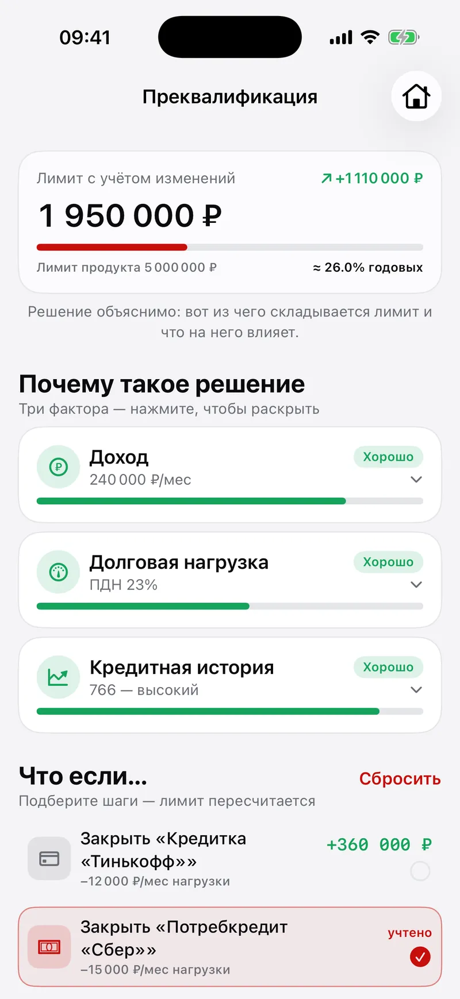

Alfa-Romeo
One passport, every profile a life needs, roubles and crypto in one balance, and an AI that works as a copilot rather than a chat window.
- screens
- 93
- the largest action the copilot may carry out
- ₽100,000
- a business payment over this needs two signatures
- ₽500,000
- cash-flow forecast
- 90 days
Personal
- The copilot, introduced first
- Roubles and crypto, one total
- A crypto account
- Crypto and digital assets
- A limit that shows its reasons
- Support, coach and agent in one chat
Business
- A cash gap, seen two weeks early
- Acquiring
- The team, and a second signature
- The AI accountant’s ninety days
- Personal and business, one passport
The bank of 2035
In 2035 your bank is also your mobile operator, your accountant and your crypto exchange. One passport opens as many profiles as a life needs: personal, business, a budget shared with a spouse, a child’s card. Roubles, the digital rouble and crypto sit in one balance, because by then nobody should care which rail the money took. Even the cashback is flexible: it can arrive in gigabytes.
One passport
- Personal
- Business
- A budget shared with a spouse
- A child’s card
- Roubles
- The digital rouble
- Crypto
One balance
What actually runs
The rates are live, from the Bank of Russia’s daily fixing and from CoinGecko. The copilot is Claude behind guardrails: it drafts the action and waits for a yes, and when there is no key or no network a deterministic stand-in takes over, so the demo never falls over halfway through a pitch.
The wallet is a closed economy on Postgres: sign up with a phone number and send play roubles, or play crypto, to another phone.
The copilot’s limits, in roubles
Up to ₽100,000, the copilot carries an action out after a yes. Over ₽500,000, a business payment waits for a second signature.
A loan that explains itself
The credit screen does not stop at yes or no. It shows the three factors behind the limit, then lets you ask what if: close that credit card, and watch the limit recount.

- The limitnot a yes or a no
- The three factors behind it
- What ifclose that credit card, and watch the limit recount
The business half
Romeo Business lives in the same app.
- Accounts
- With crypto treasuries
- Acquiring
- By payment link, QR, NFC and terminal
- Stablecoins
- Converted to roubles on arrival
- The team
- Any payment over ₽500,000 waits for a second signature
- The AI accountant
- Draws the next ninety days of cash flow and points at the gap two weeks before it opens